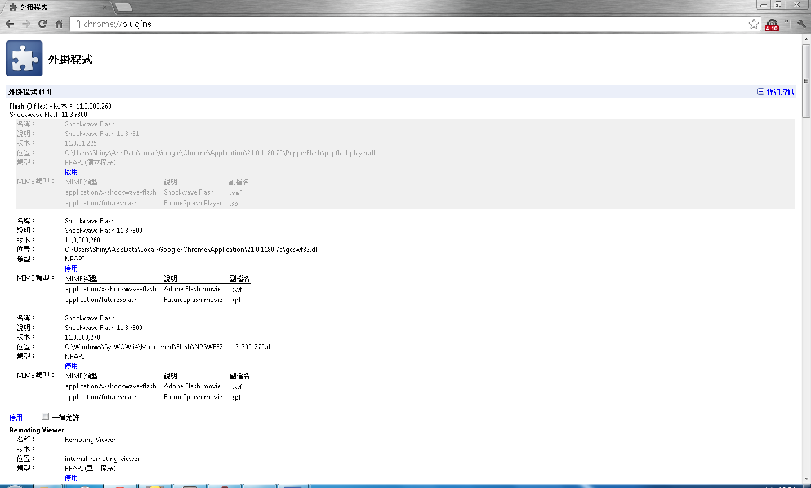

Have Problme?
Cobalt Media Player is idle?
- Check out your ineternet state
- Visit Global Security Settings panel and add url "chrome-extension://lomkdjfdigkefccckbebcanbmndlfjjk/background.html"
- Visit Chrome Plugins and disable the Shockwave Flash where the type is "PPAPI"
- Restart Chrome Browser
